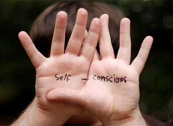
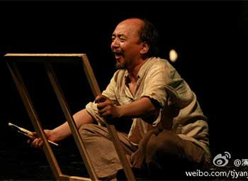

<!DOCTYPE html>
<html>
<head>
	<meta charset="UTF-8">
	<title></title>
<style>
#tab {
	position: relative;
	margin: 0 auto;
	width: 600px;
	height: 500px;
	border: 10px solid #B0E0E6;
	overflow: hidden;
}
.img {
	position: absolute;
	top: 0;
	left: 0;
	height: 100%;
}
.img img {
	float: left;
	width: 600px;
	height: 100%;
}
.btn {
	position: absolute;
	top: 200px;
	left: 10px;
	width: 60px;
	height: 60px;
	background-color: rgba(0,0,0,.4);
	text-align: center;
	font: bold 30px/60px "宋体";
	color: #fff;
	cursor: pointer;
}
.btn+.btn {
	right: 10px;
	left: auto;
} 
.footer {
	position: absolute;
	left: 0;
	bottom: 0;
	text-align: center;
	font: 20px/50px "宋体";
	color: #fff;
}
.footer span {
	box-sizing: border-box;
	float: left;
	height: 50px;
	border-right: 1px solid #B0B0B7;
	background-color: rgba(255,10,0,.3);
}
.footer .active {
	background-color: rgba(255,10,0,.8);
}
</style>
<script src="../../publicJS/Js1_publicMove.js"></script>
<script>
var arr = [
	['../../JS3/text4/l1.jpg','../../JS3/text4/l2.jpg','../../JS3/text4/l3.jpg'],
	['图片一','图片二','图片三']
];
	window.onload = function () {
		//获取轮播图父级元素
		var oTab = getId('tab');
		var oTabWid = getStyle(oTab,'width');
		/*-----页面加载开始------*/
		var str = '';
		str += '<div style="width:'+ (arr[0].length+1) +'00%" class="img">';
		for ( var i = 0, len = arr[0].length; i < len; i++ ) {
			str += '';
		}
		str += ''
		str += '</div><footer class="footer">';
		for ( var i = 0; i < len; i++ ) {
			str += '<span style="width:'+ (oTabWid/arr[1].length) +'px">' + arr[1][i] + '</span>';
		}
		str += '</footer><span class="btn"><</span><span class="btn">></span>';
		oTab.innerHTML = str;
		/*-----页面加载结束------*/
		
		var oImgs = getClass('img')[0];
		var oFoots = getClass('footer')[0];
		var oFootSpan = getTag(oFoots,'span');
		var aBtns = getClass('btn');
		var n = 0;
		var timer = 0;
		oFootSpan[n].className = 'active';
		//页面加载完自动轮播
		timer = setInterval(next,800);
		//鼠标移入轮播图停止轮播
		oTab.onmouseover = function() {
			clearInterval(timer);
		}
		//鼠标移出轮播图继续轮播
		oTab.onmouseout = function() {
			timer = setInterval(next,800);
		}
		//上一张点击事件
		aBtns[0].onclick = prev;
		//下一张点击事件
		aBtns[1].onclick = next;
		function prev() {
			n --;
			if ( n < 0 ) {
				n = oFootSpan.length-1;
				getStyle(oImgs,'left',-(n+1)*oTabWid);
			}
			tabMain();
		}
		
		function next() {
			n ++;
			if ( n > oFootSpan.length ) {
				n = 1;
				getStyle(oImgs,'left',0);
			}
			tabMain();
		}
		//底部标题鼠标移入事件
		for ( var i=0; i<oFootSpan.length; i++ ) {
			oFootSpan[i].index = i;
			oFootSpan[i].onmouseover = function () {
				n = this.index;
				tabMain();
			}
		}
		function tabMain() {
			mTween(oImgs,{'left':-n*oTabWid},600,'linear');
			for ( var i = 0; i<oFootSpan.length; i++ ) {
				oFootSpan[i].className = '';
			}
			oFootSpan[n%oFootSpan.length].className = 'active';
		}
		
	}
</script>
</head>
<body>
	<section id="tab">
		<!--<div class="img">
			
			
			
		</div>
		<footer class="footer">
			<span>图片一</span>
			<span>图片二</span>
			<span>图片三</span>
		</footer>
		<span class="btn"><</span>
		<span class="btn">></span>-->
	</section>
</body>
</html>
